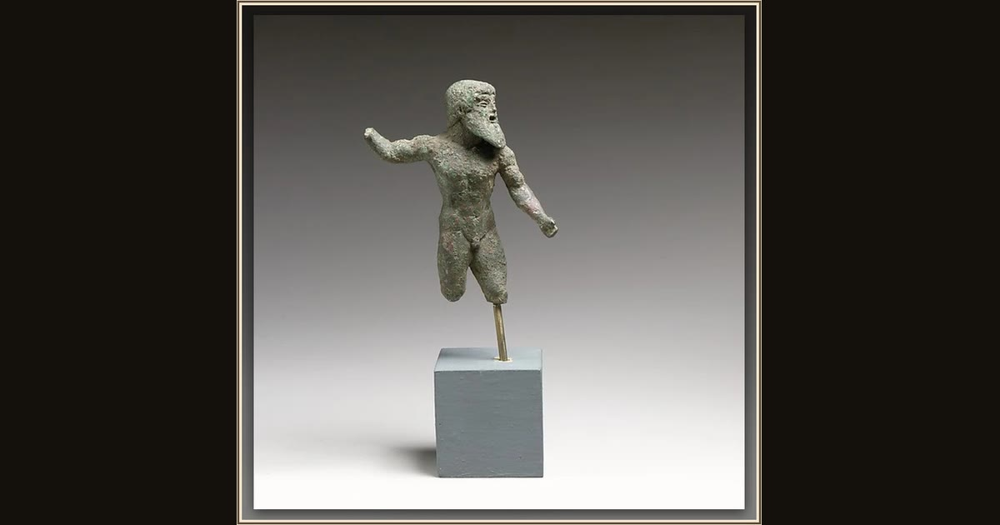

Bronze statuette of Zeus or Poseidon
Unknown · early 5th century BCE · The Metropolitan Museum of Art · New York, USA
The Met identifies this small bronze god as Zeus or Poseidon. If the figure is Poseidon, he is the sea-god whose anger keeps Odysseus from home in this passage. Explore its place in Book I of the Odyssey.